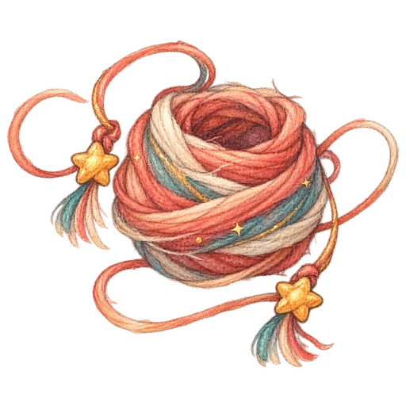

不用学提示词。说不出来时，也可以用点选继续。
一句话，怎样长成一次冒险？
孩子不需要学习怎么向 AI 下指令，只要像平时一样说出喜欢、害怕和选择。
-
说出一点想法
一句话、一个声音，或一次简单选择都可以开始。
-
伙伴开始长大
耳朵、性格、能力和声音，会回应孩子刚刚说过的话。
-
一起进入故事
孩子带着自己创造的伙伴，去发现、选择和解决问题。
-
把经历收进图鉴
角色、道具和成长记录留在当前设备，下次还能继续翻开。

AI 不替孩子讲完故事，只把孩子的回答变成下一步。
回答会改变伙伴的样子、回应方式和接下来的故事。
伙伴记得孩子做过的选择，道具也会在后面的冒险中派上用场。
观察、数量、推理和情绪理解，都发生在推进剧情的过程中。
每个道具，都记得它从哪里来。
它们不是装饰。孩子听见的声音、做出的选择和帮助过的伙伴，会变成故事里可以再次使用的线索。
故事背后，怎样一起工作？
语音、角色、画面和隐私保护各做一件明确的事，让孩子只需要自然地说和选择。
API 能力
听见一句话，判断要不要回应，再让角色说出来。
/api/asr语音转文字- 豆包大模型语音识别处理单次发言，访问密钥只保留在服务端。
/api/story-turn理解这一轮- 豆包 Seed 2.0 Mini 判断孩子是否说完，并把自然表达匹配到当前故事行动。
/api/tts角色开口- 豆包 Seed TTS 生成角色动态语音，也可切换 Fish Audio；失败时字幕、口型和动作仍会继续。
第三方组件
- Kindergrimm程序化角色、骨骼与动画基础
- Three.js r160角色骨骼、Canvas 纹理与场景渲染
- Calligraph 1.4.1逐字出现的对话气泡
- UISFX 0.4.0在浏览器本地合成自然质感音效
GitHub 项目
主分支保留版本历史，源码、构建脚本、许可和第三方声明都能查看。正式站按独立版本发布，并保留回滚点。
查看源码与许可设计特色
NPC 对话把话题自然交给孩子。
收音、思考、字幕、口型和动作同步。
同一份种子与配方能还原同一个伙伴。
不建立儿童账号，成长记录保存在当前设备。
从哪一页开始，都由孩子决定。
直接进入语音故事，或先捏一只属于自己的奇妙伙伴。